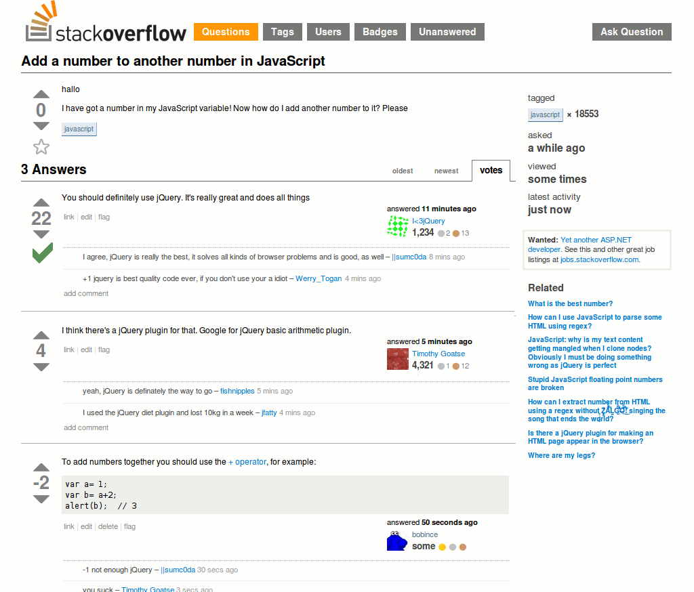

Improving My Website With a Static Site Generator
Published: September 30, 2024
Tags: Bad Life Decisions, C++, wxWidgets, HTML, CSS, JavaScript
It's hard to believe that it's been almost 3 years since I decided to buy this domain on a whim. To be honest, I still can't quite put a finger on why exactly I decided to do this, as I've never been one to keep a diary or write a blog. But now that I have finished my Master's Degree in Computer Science and Engineering and need to start looking for work, I sure am glad that I made such a weird decision a few years ago.
Summer came along, and I decided that it was about time I make this website presentable. The initial idea for it was really to just have a place for myself, in some ways as a rebellion of the fact that personal webpages have gone the way of the Dodo due to the enshittification of the internet. But life choices change in that timespan, and it became important to also have a place where I can put forward what I've been doing my entire life. I'm not sure if job recruiters will bother looking at this website, but it's convenient for me to list out stuff I've worked on so that I can best pick and choose for my applications. Even if I don't make this website for anyone in specific, at least I'd do it for me.
It's... a weird feeling to see a single page summarising your life's work. Even more so when said work might potentially be presented to someone who will decide your future. Never really thought that dicking about in Game Maker 5 at the age 10 to make a Space Invaders clone could be critical to me getting a job at the age of 25, but here I am...
Web Development
To say I don't understand web development would be an understatement. Despite is being one of the largest employers of developers in the world, I never really cared for or wanted to care about the web. The web is a bloated mess of standards, and the software that lets one use it requires at least half of your system's resources. And the keywords? I don't even know where to get started. Who is MX, and what is his record? What course do I need to take in order to get my SSL certificate? I tried asking my professors these question but they just looked at me with a nauseated face.
The main reason that I've always winced at the idea of doing web development? I've been making games since I was a kid, and to this day my biggest annoyance is working on UI. Because no matter how well it's been made, there's always going to be some weirdo with a funky screen resolution or setup who will find a way to wreck your work. Web development is basically that, but exponential as you need to take into account both desktops, phones, and esoteric devices with resolutions of any size or scale. And that's not to mention differing web standards and browsers who won't always agree on what's supported and how.
Now, I'm not a complete dunce with this stuff... Despite how much I joke about (and in!) the internet, I do have some ideas of what I'm doing. I'm familiar with JavaScript and WebGL, and HTML is basically just a fancy XML dialect. Making a website is infinitely easier than having to deal with everything that actually makes the internet work, and I can be thankful for my sanity that I'm not someone who needs to deal with that. Especially with the proliferation of tools like Wordpress and Jekyll, a layman can cook up a website in mere minutes without ever touching a line of code.
But that's not really me.
I'm someone who likes to understand things. I like breaking stuff open and looking at what makes them tick. Despite having done Computer Science and Engineering, my two favorite subjects were from other degrees in my university: Logical Systems II and Microelectronics I. In the former, we implemented an 8086 processor using nothing but raw logic gates in in Xilinx, and in the latter we etched our own MOSFETs on silicon wafers. Hell, the reason I took up Nintendo 64 development was because I wanted to have an excuse to write game engines from scratch. I liken it to how a blacksmith will not only make things, but also the things to help him make said things too. Picking up someone else's tool to make a website for me feels like I'm betraying who I am as a person. It would be the sane thing to do, but therapy is expensive.
{kind=link}
Now, punching in some HTML and CSS for a blog page is easy. You do it once, and then copy paste that file around to make more pages, modifying the contents to fit the new blog entry. That's literally what I did for the first 3 blog pages on this website. But if you want a bit more out of a webpage than that, it quickly scales up. For instance, this blog entry has tags. You can click on a tag and it will take you to another web page that lists all the other pages in my website that have that tag as well. Could this be done manually? Sure. You can make the tag page yourself, add your blog post to said page, and then hotlink your blog post to it. But if at any time you need to change a page, or delete it, you need to remember to remove all references to and from it, lest your website be crippled with missing pages. So, to avoid this problem, developers use something that is called a "Static Site Generator", or SSG for short (not to be confused with Super Shotgun).
Making a Super Shotgun
 To defeat the pinky demon, shoot at it until it dies. Image sourced from here.
To defeat the pinky demon, shoot at it until it dies. Image sourced from here.
Naturally, I wrote my own SSG to generate my own website. What exactly would I gain from writing a static site generator? I don't know, but I won't know until I do it either! Funnily, most of the popular open source SSG's are written in JavaScript of all things, and I completely understand why. JavaScript is a super easy language to pick up, has hundreds of thousands of libraries, and works on any operating system that has a web browser (which, unless you use TempleOS as your daily driver, you have one). It is, an objectively, excellent choice to write a website generator in.
So I chose to write my SSG in C++.
Why? No particular reason. I like working with C/C++, and I like the look of native software that wxWidgets generates. Sure, it's harder and a bit less convenient than using JS or Python for my tool, but convenience was never really the point of the exercise. But for you, sane reader, if you ever decide to make your own site generator (which you shouldn't) use a strongly typed language. It will save you work and headaches in the future.
There's two things I wanted out of my website: I wanted a place to list all my projects, and I wanted a place to write blog posts on. And each of these pages would have sections, for instance, listing different game projects by the engine they used. So the layout I had in mind for the program was to have a tree structure on the left side, where you would have a list of sections with pages inside them, and on the right side of the program you would have a bunch of entry boxes. Up top you would have a dropdown to pick between projects listing and blog listing. I whipped this up in a tool called wxFormBuilder, and copy pasted the generated code into a text editor.

Writing all the functionality of the site generator was pretty easy. Each section (project/blog) has a JSON file (parsed and saved using nlohmann's JSON library) that stores all the information about categories and the entries within them. The large text box in the entry editor is the "description" box, and it supports markdown for fancy effects (said content is stored in a separate markdown file and not in the JSON). I can also just inject some HTML directly into the box if I really need to customize something. That's how I handle centering images, for instance.
To support markdown, I originally picked a library called Maddy, but this library was struggling to handle section headers properly... So instead of wasting too much time fixing it, I swapped it over to md4c. This second library worked better, but had a small problem, which was the fact that sections don't support hyperlinking (in case you haven't noticed, you can click section titles in my blog entries to jump to them). This was something I wanted in my website, and I tried adding it in myself, but doing so would require a lot of work that I didn't feel like dedicating at the time. So I found a fork of the library which supported header URLs, which came with a small caveat... It's using a 2 year old version of the library which didn't support UTF-8. For me, this is a bit of a problem, because I kinda need some extension of the ASCII standard in order to support the cedilha used to spell my name. The way I went about this was to parse through characters with diacritics that I am likely to use and replace them with the HTML character entity equivalent (for instance, á in HTML can be safetly written as á). For this to work properly with md4c, however, the special character needs to be converted into an intermediary one first. Mine all use the format _X_SYMBOL, where X is the name of said symbol in all caps.
In the Tags, Images (only applicable for projects), and URLs section of my SSG, one can just post comma separated elements. In the case of URLs, the projects page will also generate a fancy looking badge for the URL. Tags are stored in a linked list, and during website generation a hashmap is generated to link all known tags to their respective pages. In the case of images, which is only applicable to project entries, you can paste either an image URL or a video URL. An image carousel is be generated with all of those things.
An image carousel is kinda bodgy to make work using only HTML and CSS, so it's time I also talk a little bit about a pain point.
You should use JQuery
There's this old meme about Stack Overflow that I've seen a lot:

(Clicking an image on my blog entries should open it fullscreen in a new tab)
And from my (little) personal experience working on this website, it's really true. It's hard to search for some basic JavaScript stuff and not be told by the top answers to use JQuery. I understand the appeal, it's convenient, but to me it's like people recommending everyone to use Boost for C++ stuff: it's kinda ridiculous to link an entire library just for one small bit of functionality. It can make sense when you need to lean on said library for a lot of stuff, but when you're linking one just to solve something that can be done in three lines of code, you are creating unecessary bloat.
I am already not that big of a fan of websites that lean heavily on JavaScript. I get it, it looks swanky and impressive and modern. But I think supporting as many devices as possible is a bigger priority. If I want to ask someone to check my website out on a literal potato with a touch screen attached, they should be able to. Now, to be honest I also absolutely adore gimmicky websites like Bruno Simon's personal site or Jim Carrey's now-defunct website, but I also prefer my website to not turn someone's phone into a hand-warmer.
As of right now, my website uses JavaScript for three things: For handling the hiding of section categories in the blog/project list page, for handling the image carousel in a project page, and for a tiny gimmick in the front page (I'll concede that the last one isn't necessary and is merely for vanity reasons). For me, that's really all that I need. I'm a plain, boring person (at least I use CSS, unlike Richard Stallman).
One thing thing that I will praise FireFox for (and I assume this holds true for Chromium browsers as well), the built-in console is legendary. You can test lines of JavaScript on the go, and you can modify page HTML and CSS instantly. It's an amazing sandbox, and a gold standard for how this sort of stuff should be done (looking at you, game engines).
Page Templates
The current look of my website isn't final, I hope that was somewhat obvious... To make the SSG generate the HTML for the pages, it would't make sense to integrate this stuff directly in the code. It would mean I need to recompile a C++ project just to change the look of the website, which wouldn't really change the contents that are stored in markdown/JSON. So instead, I have a folder called templates filled with some HTML files which my program will dig into and use. Those templates have keywords in them in the format _TEMPLATE_BLAH_, which the SSG will find and replace with the respective contents. This means that if I change the look of the website, I just need to do it on the template HTML, and then hit a single button in my SSG to recompile the website in its entirety (which is necessary as the SSG will only compile pages that were modified).
If I were to complain about one thing in my SSG, it's that I didn't really lean much on C++'s classes, and I probably should've. I tend to write C++ as more of a "C with extensions" way, but sometimes I am really stubborn for no reason. Project pages and blog pages are both stored as two separate structs, which did cause some headaches during development because I had to use a third struct with an enumeration to be able to identify the two types apart when I wanted to put them in a list. The two page types should instead be specializations of a base Page class. I opted to not change that because, to be honest, I just wanted to get this damn program finished and not have to go through the code line by line to replace that (not to mention potentially debug problems that arise from said replacement). This SSG already took me a month and a half to make, which is a month longer than I was hoping... But it is also hard to predict when you're going to be busy with other stuff in life, and sometimes I would take a day off or two to enjoy the small break I'm taking before I go look for work (for instance, I completed Yakuza 2 to 100% after stopping it due to my dissertation taking priority).
Oh and yes, my static site generator is available on GitHub, thanks for asking!
What's Next?
With my website being entirely handled by my SSG, there's still some work to be done. As of writing this article, the pages themselves are very bare and could definitely use the hand of a designer to make it look a bit more palatable. I am not a grate artiste, but luckily I have a friend who is! Sometime in the future I'll bother her to try and workshop something. For the time being, the project/blog list pages use some CSS that I stole was inspired from Spriter's Resource, and project pages/blog entries will be using this pretty uneventful paper page look.
As much as I miss the skeleton running from a UFO GIF that was the hallmark of my front page, I did still find a way to sneak him into the website. So his legacy will live on :)
I still need to go through all of my project pages and fill them with information, but this could take a while as I have about 40 pages of content to fill. Not to mention some blog posts I'd like to write!
Damn me for working on so much stuff...